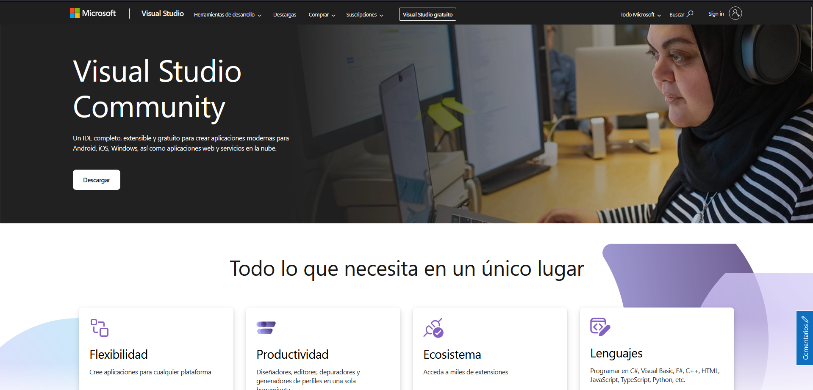
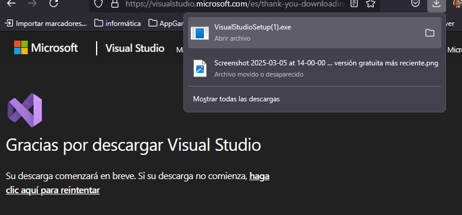
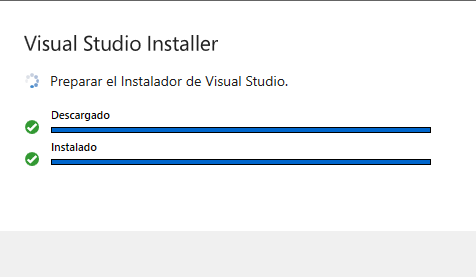
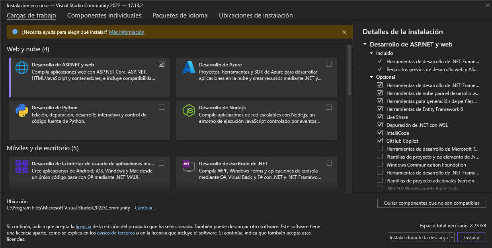
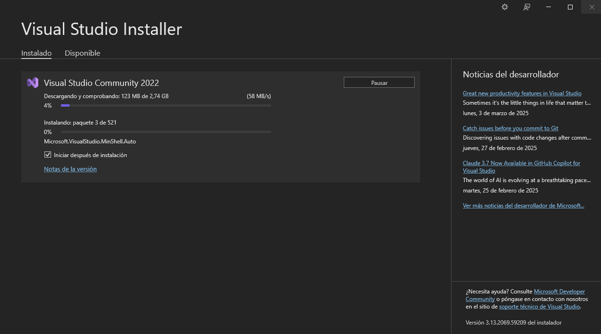
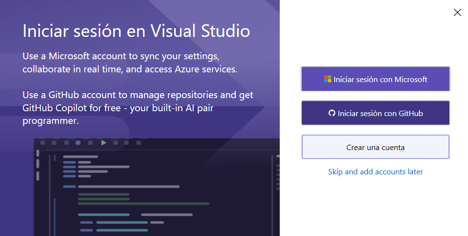
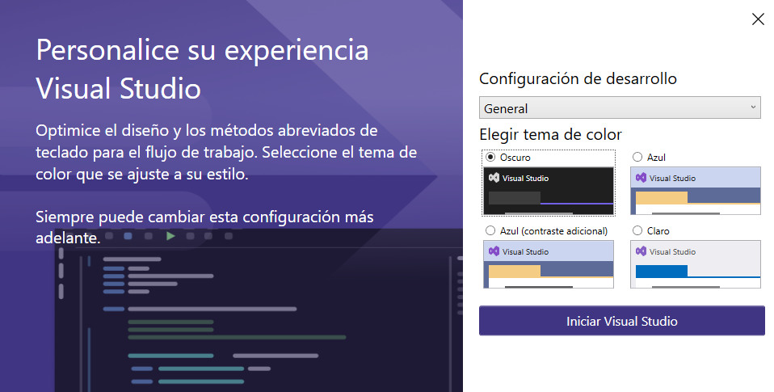
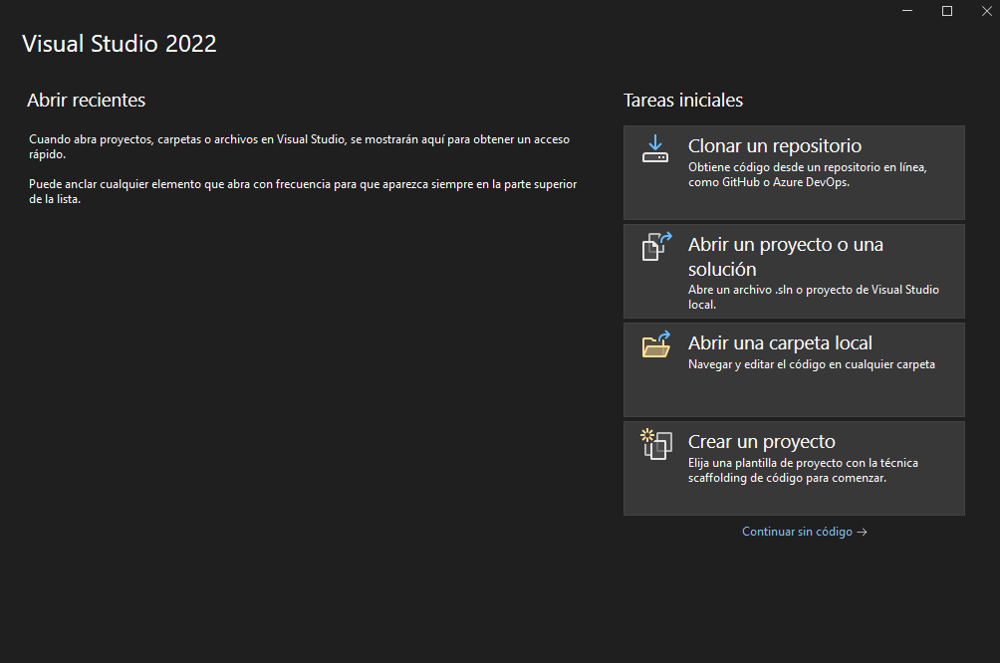

Primero entramos al siguiente enlace:
https://visualstudio.microsoft.com/es/vs/community/
Ahora le damos a descargar y luego abrimos lo que se nos descargó
Ahora nos solicitará permisos de administrador, le decimos que sí y nos saldrá la siguiente pestaña a la cual le tendremos que dar a continuar
Ahora seleccionamos "Desarrollo de ASP.NET y web" y seguidamente le damos abajo a la derecha instalar
Esperamos hasta que el proceso de instalación termine
Le damos a skip and add accounts later
A continuación tenemos que elegir el tema que queremos elegir y le damos a Iniciar Visual Studio, tras la instalación también tenemos opción a modificarlo
Y nos saldrá la siguiente pestaña donde ya le podemos dar uso al programa
Visual Studio es un entorno de desarrollo completo que permite crear aplicaciones web, de escritorio y videojuegos, principalmente con C#, pero también con Python y C++. Ofrece herramientas como un depurador, diseñador de interfaces, integración con control de versiones, pruebas automatizadas y compatibilidad con la nube. Su versatilidad y personalización lo hacen ideal para desarrolladores de distintas plataformas. Web de referencia